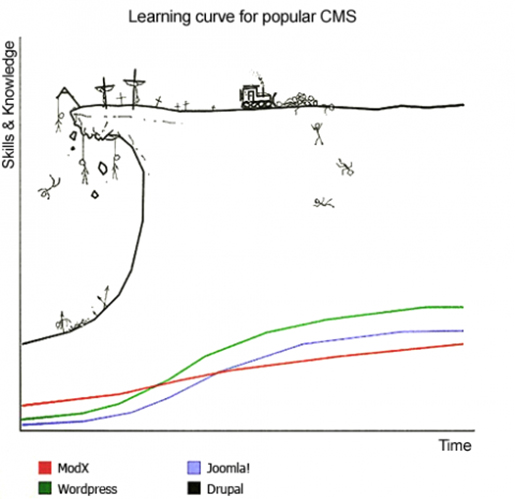

Mi nombre es Jesús Manuel Olivas
Me pueden encontrar en twitter como @jmolivas
En mi blog http://jmolivas.com
Mi nombre es Jesús Manuel Olivas
Me pueden encontrar en twitter como @jmolivas
En mi blog http://jmolivas.com
Relativamente nuevo en Drupal desde principios de 2010 trabajando con este framework.
Tengo ese mismo tiempo programando con PHP y con symfony2 en fechas recientes.
Próximamente :
@hechoendrupal
http://hechoendrupal.com
Los que hemos trabajado con Drupal conocemos que la curva de aprendizaje de Drupal es muy elevada.

Toma mucho tiempo ser productivo en Drupal ya que tiene una manera muy particular de resolver los problemas, esto conocido como "The Drupal Way"
Y todo este conocimiento adquirido solo es válido y útil en el entorno de Drupal.
En ocaciones el modo de Drupal no esta apegado a los estandares del mercado, no toma ventaja de nuevas buenas prácticas y hace más complicada la implementación de nuevas tecnologias.
Término usado para describir el comportamiento o la aversión que evita el uso de proyectos ya existentes a causa de sus orígenes externos.
Construyendo aplicaciones bajo patrones ampiamente probados y establecidos como POO (Programación Orientada a Objetos)
Aprovechando las nuevas características del lenguaje PHP y mejoras de rendimiento.
Compartiendo codigo (entre diferentes proyectos)
Por que se beneficia haciendo las cosas diferentes independientemente de las posibles desventajas.
"La complejidad del código personalizado que se utiliza y la arquitectura no estándar se combinan para crear una barrera de entrada para los nuevos desarrolladores de Drupal. (tanto a los desarrolladores experimentados y novatos por igual)."
buytaert.net
La iniciativa WSCC - Web Services and Context Core Initiative propone la utilización de algunos componentes del Framework Symfony 2 originalmente se mencionó HttpFoundation y ClassLoader.
El componente ClassLoader se usa para cargar automáticamente archivos que respetan tanto los estándares de interoperabilidad técnica de los "Name Spaces" de PHP 5.3 como la convención de nomenclatura de las clases PEAR.
Proporciona los principales objetos necesarios para hacer frente a HTTP. Es una abstracción orientada a objetos de algunas funciones y variables nativas de PHP:
Este se encarga de la parte dinámica de HTTP, es una capa en la parte superior de las clases Request y Response para estandarizar la forma en que se manejan las peticiones.
Proporciona tambien puntos de extensión y herramientas que lo convierten en el punto de partida para crear una plataforma Web sin demasiado trabajo y opcionalmente añade configurabilidad y extensibilidad, gracias al componente de inyección de dependencias.
Consruye tus aplicaciones no tus herramientas . Este es el principio básico de un todo framework: no tener que reinventar la rueda. Y la eliminación de malas practicas y tareas de bajo valor agregado (por ejemplo, el desarrollo de componentes genéricos con el fin de centrarse totalmente en las reglas de negocio.
Drupal.org
WSCCI
Symfony.com
Symfony.es
Slides hechas con kinout
kinout on github
Tipografías utlizadas Bitter & Open Sans
Open Sans en google webfont directory
Bitter en google webfont directory
Drupal Camp, Costa Rica 2012
Jesús Manuel Olivas | @jmolivas | http://jmolivas.com